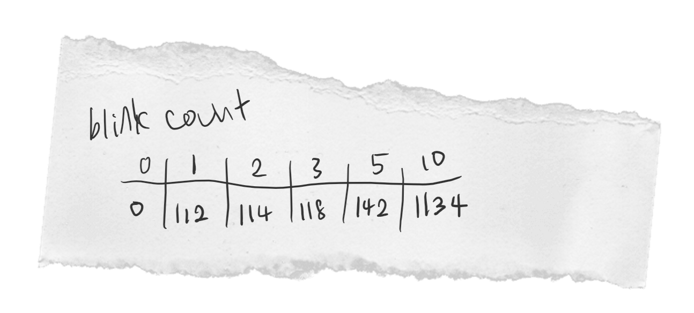
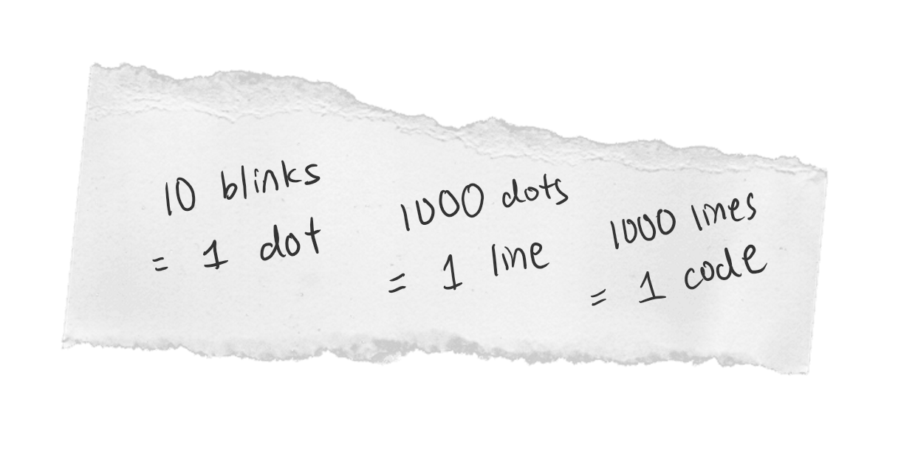

With the discovery of the first clue, you've started to narrow down the suspects. It seems to have been someone close to the deceased.
Even John, the deceased's husband, cannot be spared from your investigation. You've managed to compile a list of possible suspects:
You call each person in, questioning about their whereabouts the night of the incident. Each gave strong statements, and many had alibis.
"I was asleep in the house," says John Urmom. "After waking up, I ran to my wife's room to wake her up - that's when I saw her, and she was dead!"
"I only heard about this incident when John called me," Karen states, wiping away a tear. "I was at my own home at the time, sleeping. I am so terribly sad about the loss of my best friend."
"I came here to visit Mary this week, but me and Wilson are living in a hotel, not their house. We were both at the hotel resting when the murder occured," Stacy states. Wilson gave a similar, uncontradictory statement.
"I go to a different part of the residence at night when my work is over," says the maid Joanne. "I had no idea the murder occured until the next morning."
"I was working late at the hospital that night," states Dr. John Smith. "Mary had come in the night before for a routine checkup, and she was fine. That was the last I saw of her."
You don't seem to find anything wrong about their statements, nothing that contradicts your existing evidence. However, once all the suspects have left the room, you notice two slips of paper that has fallen onto the ground:


It must have been left by one of the suspects, however you have no idea which was the one that dropped it. The slips seem to point to a code, however you must figure out the code yourself.
You may refer to the puzzle rulebook in room 1.
WHAT WAS THE CULPRIT'S SECOND CLUE?